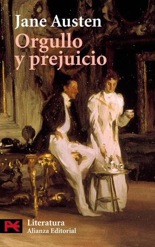
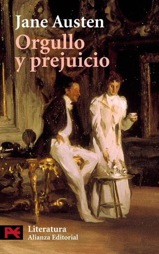

Son títulos espléndidos de los que puedes disfrutar en las largas tardes de verano, entre trenes y aviones, disfrutando de un buen insomnio ... Nuestro mix de novelas actuales y clásicos atemporales.
2017 - Ed. Seix Barral
La obra de Auster da para todas las estaciones: elegiría La trilogía de Nueva York para la primavera, Sunset Park para el verano, Brooklyn Follies para el otoño...
Resérvate cualquier momento para 4 3 2 1, un clásico instantáneo. Porque en las casi mil páginas retoma las estructuras juguetonas de sus primeras novelas -en este caso contando la vida de una misma persona, que se parece mucho al propio Auster, con cuatro destinos diferentes- pero esta vez el fondo tiene más potencia que el artificio. Su tratado definitivo sobre la juventud, el amor y el arte.
2004 - Alianza Editorial
Si piensas que es una novela para mujeres, pues es verdad, es maravillosa para mujeres. Exactamente igual de maravillosa que para hombres.
Con apenas 20 años, Austen se marcó uno de los retratos más vigorosos sobre el deseo y su contención, sobre el amor y su encaje social, sobre el honor y su imposible realización completa. Química pura, un millón de veces imitada e inimitable a la vez, que transcurre en la recurrente campiña londinense de principios del siglo XIX.
2012 - Random House
La primera regla del club de la lucha es no hablar del club de la lucha.
Un puñado de jóvenes oficinistas, abrumados por el estrés y sus respectivas paranoias, quedan todos los fines de semana a pelearse entre sí a lo bestia. Una novela cáustica e hilarante con un final insospechado. Si te gustó la película, espera a que te leas la novela.